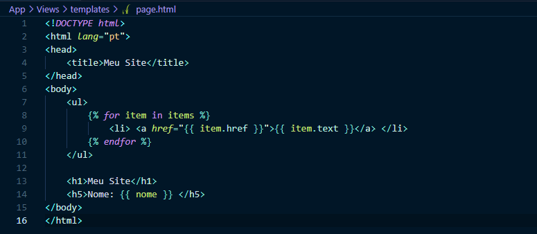

O Twig é o template engine padrão na framework Zeero, isso devido a sua flexibiliade , rapidez e segurança.
O directório App/Views serve para armazenar os templates da aplicação .
Um template é simplesmente um arquivo de texto. Este pode gerar qualquer formato baseado em texto (HTML , XML , CSV , etc.). Eles não têm uma extensão específica.
Um template contém variáveis e expressões, os quais serão trocados por valores quando o template for avaliado ou processado, e tags que controlam a lógica do template.
No Twig há dois tipos de delimitadores:
A aplicação passa variáveis para o template para manipulação dentro do template. Variáveis podem ter atributos ou elementos que podem ser acessados. A representação visual da variável depende de como chegou da aplicação para o template.
Pode ser usado o ponto ( . ) para acessar atributos de uma variável ( metódos ou propriedades de um objecto PHP, ou ainda items de um array PHP ). Bem como a chamada sintáxe subscript ( [ ] ) .
{{ foo.bar }
{{ foo['bar'] }}
Quando o atributo contém um símbolo especial ( # , + , / , * , - , etc. ), é usado a função attribute.
{{ attribute(foo , 'data-foo') }}
{% set foo = 'foo value' %} // string
{% set foo = [1,2,3] %} // array
{% set foo = { 'foo-key' : 'foo-key-value' } %} // objecto
Variáveis podem ser modificadas por filtros. Filtros são separados das variáveis pelo símbolo ( | ) e podem ter paramêtros opcionais dentro de parênteses. Múltiplos filtros podem ser encadeados, o resultado de um filtro é aplicado ao próximo.
{{ nome|striptags }}
{{ list|join(', ') }}
{% filter upper %}
// todas as letras deste texto são maiúsculas
{% endfilter %}
Funções podem ser chamadas para gerar conteúdo. São chamadas pelos seus nomes seguido por parênteses ( ) e podem ter argumentos. Um Exemplo é a função range que retorna uma lista contendo uma progressão aritmética de inteiros:
{% for i in range(1, 10) %}
{{ i }} // 1,2,3,4,5,6,7,8,9,10
{% enfor %}
{% if condiction %}
...
{% endif %}
{% if condiction %}
...
{% else %}
...
{% endif %}
{% if condiction %}
...
{% elseif condiction %}
...
{% else %}
...
{% endif %}
{% for user in users %}
{{ user.name }}
{% enfor %}
{% for user in users %}
{{ user.name }}
{% else %}
{{ '0 Records' }}
{% enfor %}
{% for count in range( start , end ) %}
{% enfor %}
Além da organização dos arquivos de templates, na framework Zeero há um conjunto de funções pré definidas.
| função | usado para |
| asset | retornar a URL absoluta de um arquivo no directório App/public/assets |
| auth() | retornar a instância do AuthController |
| csrfMeta() | retornar um elemento meta com um token CSRF |
| csrfToken() | retornar um token CSRF |
| csrfInput() | retornar elemento input:hidden com um token CSRF |
| current_uri() | retornar a URI actual da requisição |
| render | retornar a URL absoluta de um arquivo no directório App/Views/renders |
| macro | retornar a URL absoluta de um arquivo no directório App/Views/macros |
| helper | retornar a URL absoluta de um arquivo no directório App/Views/helpers |
| template | retornar a URL absoluta de um arquivo no directório App/Views/templates |
| timer | retornar uma instância da classe Timer |
| backURL | retornar a URL anterior |
| route | retornar a URL de uma rota nomeada |
| _dump | mostrar conteúdo de uma variável |
| session | retornar um valor das sessões |
| flash | retornar um valor das sessões flash |
| has_session | testar se existe uma valor nas sessões |
| has_flash | testar se existe um valor nas sessões flash |